| authors: | Adrien Chauve, Andre Espaze, Emmanuelle Gouillart, Gaël Varoquaux, Ralf Gommers |
|---|
Scipy
The scipy package contains various toolboxes dedicated to common issues in scientific computing. Its different submodules correspond to different applications, such as interpolation, integration, optimization, image processing, statistics, special functions, etc.
scipy can be compared to other standard scientific-computing libraries, such as the GSL (GNU Scientific Library for C and C++), or Matlab’s toolboxes. scipy is the core package for scientific routines in Python; it is meant to operate efficiently on numpy arrays, so that numpy and scipy work hand in hand.
Before implementing a routine, it is worth checking if the desired data processing is not already implemented in Scipy. As non-professional programmers, scientists often tend to re-invent the wheel, which leads to buggy, non-optimal, difficult-to-share and unmaintainable code. By contrast, Scipy‘s routines are optimized and tested, and should therefore be used when possible.
Chapters contents
Warning
This tutorial is far from an introduction to numerical computing. As enumerating the different submodules and functions in scipy would be very boring, we concentrate instead on a few examples to give a general idea of how to use scipy for scientific computing.
scipy is composed of task-specific sub-modules:
| scipy.cluster | Vector quantization / Kmeans |
| scipy.constants | Physical and mathematical constants |
| scipy.fftpack | Fourier transform |
| scipy.integrate | Integration routines |
| scipy.interpolate | Interpolation |
| scipy.io | Data input and output |
| scipy.linalg | Linear algebra routines |
| scipy.ndimage | n-dimensional image package |
| scipy.odr | Orthogonal distance regression |
| scipy.optimize | Optimization |
| scipy.signal | Signal processing |
| scipy.sparse | Sparse matrices |
| scipy.spatial | Spatial data structures and algorithms |
| scipy.special | Any special mathematical functions |
| scipy.stats | Statistics |
They all depend on numpy, but are mostly independent of each other. The standard way of importing Numpy and these Scipy modules is:
>>> import numpy as np
>>> from scipy import stats # same for other sub-modules
The main scipy namespace mostly contains functions that are really numpy functions (try scipy.cos is np.cos). Those are exposed for historical reasons only; there’s usually no reason to use import scipy in your code.
Loading and saving matlab files:
>>> from scipy import io as spio
>>> a = np.ones((3, 3))
>>> spio.savemat('file.mat', {'a': a}) # savemat expects a dictionary
>>> data = spio.loadmat('file.mat', struct_as_record=True)
>>> data['a']
array([[ 1., 1., 1.],
[ 1., 1., 1.],
[ 1., 1., 1.]])
Reading images:
>>> from scipy import misc
>>> misc.imread('fname.png')
>>> # Matplotlib also has a similar function
>>> import matplotlib.pyplot as plt
>>> plt.imread('fname.png')
See also:
- Load text files: numpy.loadtxt()/numpy.savetxt()
- Clever loading of text/csv files: numpy.genfromtxt()/numpy.recfromcsv()
- Fast and efficient, but numpy-specific, binary format: numpy.save()/numpy.load()
Special functions are transcendental functions. The docstring of the scipy.special module is well-written, so we won’t list all functions here. Frequently used ones are:
- Bessel function, such as scipy.special.jn() (nth integer order Bessel function)
- Elliptic function (scipy.special.ellipj() for the Jacobian elliptic function, ...)
- Gamma function: scipy.special.gamma(), also note scipy.special.gammaln() which will give the log of Gamma to a higher numerical precision.
- Erf, the area under a Gaussian curve: scipy.special.erf()
The scipy.linalg module provides standard linear algebra operations, relying on an underlying efficient implementation (BLAS, LAPACK).
The scipy.linalg.det() function computes the determinant of a square matrix:
>>> from scipy import linalg
>>> arr = np.array([[1, 2],
... [3, 4]])
>>> linalg.det(arr)
-2.0
>>> arr = np.array([[3, 2],
... [6, 4]])
>>> linalg.det(arr)
0.0
>>> linalg.det(np.ones((3, 4)))
Traceback (most recent call last):
...
ValueError: expected square matrix
The scipy.linalg.inv() function computes the inverse of a square matrix:
>>> arr = np.array([[1, 2],
... [3, 4]])
>>> iarr = linalg.inv(arr)
>>> iarr
array([[-2. , 1. ],
[ 1.5, -0.5]])
>>> np.allclose(np.dot(arr, iarr), np.eye(2))
True
Finally computing the inverse of a singular matrix (its determinant is zero) will raise LinAlgError:
>>> arr = np.array([[3, 2],
... [6, 4]])
>>> linalg.inv(arr)
Traceback (most recent call last):
...
LinAlgError: singular matrix
More advanced operations are available, for example singular-value decomposition (SVD):
>>> arr = np.arange(9).reshape((3, 3)) + np.diag([1, 0, 1])
>>> uarr, spec, vharr = linalg.svd(arr)
The resulting array spectrum is:
>>> spec
array([ 14.88982544, 0.45294236, 0.29654967])
The original matrix can be re-composed by matrix multiplication of the outputs of svd with np.dot:
>>> sarr = np.diag(spec)
>>> svd_mat = uarr.dot(sarr).dot(vharr)
>>> np.allclose(svd_mat, arr)
True
SVD is commonly used in statistics and signal processing. Many other standard decompositions (QR, LU, Cholesky, Schur), as well as solvers for linear systems, are available in scipy.linalg.
The scipy.fftpack module allows to compute fast Fourier transforms. As an illustration, a (noisy) input signal may look like:
>>> time_step = 0.02
>>> period = 5.
>>> time_vec = np.arange(0, 20, time_step)
>>> sig = np.sin(2 * np.pi / period * time_vec) + \
... 0.5 * np.random.randn(time_vec.size)
The observer doesn’t know the signal frequency, only the sampling time step of the signal sig. The signal is supposed to come from a real function so the Fourier transform will be symmetric. The scipy.fftpack.fftfreq() function will generate the sampling frequencies and scipy.fftpack.fft() will compute the fast Fourier transform:
>>> from scipy import fftpack
>>> sample_freq = fftpack.fftfreq(sig.size, d=time_step)
>>> sig_fft = fftpack.fft(sig)
Because the resulting power is symmetric, only the positive part of the spectrum needs to be used for finding the frequency:
>>> pidxs = np.where(sample_freq > 0)
>>> freqs = sample_freq[pidxs]
>>> power = np.abs(sig_fft)[pidxs]
[source code, hires.png, pdf]
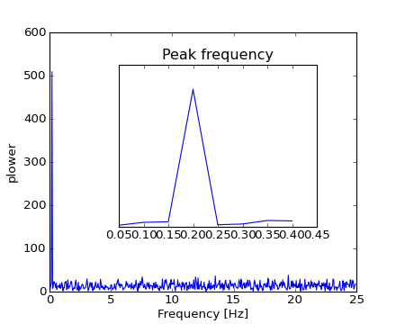The signal frequency can be found by:
>>> freq = freqs[power.argmax()]
>>> np.allclose(freq, 1./period) # check that correct freq is found
True
Now the high-frequency noise will be removed from the Fourier transformed signal:
>>> sig_fft[np.abs(sample_freq) > freq] = 0
The resulting filtered signal can be computed by the scipy.fftpack.ifft() function:
>>> main_sig = fftpack.ifft(sig_fft)
The result can be viewed with:
>>> import pylab as plt
>>> plt.figure()
>>> plt.plot(time_vec, sig)
>>> plt.plot(time_vec, main_sig, linewidth=3)
>>> plt.xlabel('Time [s]')
>>> plt.ylabel('Amplitude')
[source code, hires.png, pdf]
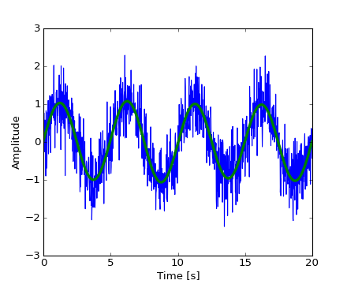numpy.fft
Numpy also has an implementation of FFT (numpy.fft). However, in general the scipy one should be preferred, as it uses more efficient underlying implementations.
Worked example: Crude periodicity finding
[source code, hires.png, pdf]
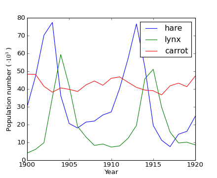[source code, hires.png, pdf]
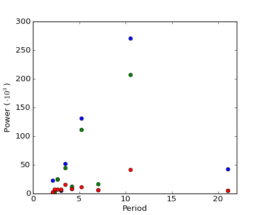Worked example: Gaussian image blur
Convolution:
[source code, hires.png, pdf]
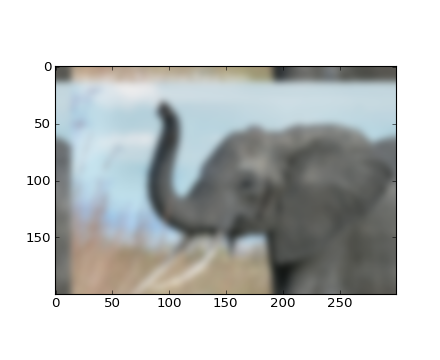Exercise: Denoise moon landing image

Optimization is the problem of finding a numerical solution to a minimization or equality.
The scipy.optimize module provides useful algorithms for function minimization (scalar or multi-dimensional), curve fitting and root finding.
>>> from scipy import optimize
Finding the minimum of a scalar function
Let’s define the following function:
>>> def f(x):
... return x**2 + 10*np.sin(x)
and plot it:
>>> x = np.arange(-10, 10, 0.1)
>>> plt.plot(x, f(x))
>>> plt.show()
[source code, hires.png, pdf]
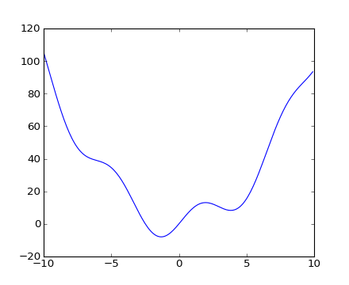This function has a global minimum around -1.3 and a local minimum around 3.8.
The general and efficient way to find a minimum for this function is to conduct a gradient descent starting from a given initial point. The BFGS algorithm is a good way of doing this:
>>> optimize.fmin_bfgs(f, 0)
Optimization terminated successfully.
Current function value: -7.945823
Iterations: 5
Function evaluations: 24
Gradient evaluations: 8
array([-1.30644003])
A possible issue with this approach is that, if the function has local minima the algorithm may find these local minima instead of the global minimum depending on the initial point:
>>> optimize.fmin_bfgs(f, 3, disp=0)
array([ 3.83746663])
If we don’t know the neighborhood of the global minimum to choose the initial point, we need to resort to costlier global optimization. To find the global minimum, the simplest algorithm is the brute force algorithm, in which the function is evaluated on each point of a given grid:
>>> grid = (-10, 10, 0.1)
>>> xmin_global = optimize.brute(f, (grid,))
>>> xmin_global
array([-1.30641113])
For larger grid sizes, scipy.optimize.brute() becomes quite slow. scipy.optimize.anneal() provides an alternative, using simulated annealing. More efficient algorithms for different classes of global optimization problems exist, but this is out of the scope of scipy. Some useful packages for global optimization are OpenOpt, IPOPT, PyGMO and PyEvolve.
To find the local minimum, let’s constraint the variable to the interval (0, 10) using scipy.optimize.fminbound():
>>> xmin_local = optimize.fminbound(f, 0, 10)
>>> xmin_local
3.8374671...
Note
Finding minima of function is discussed in more details in the advanced chapter: Mathematical optimization: finding minima of functions.
Finding the roots of a scalar function
To find a root, i.e. a point where f(x) = 0, of the function f above we can use for example scipy.optimize.fsolve():
>>> root = optimize.fsolve(f, 1) # our initial guess is 1
>>> root
array([ 0.])
Note that only one root is found. Inspecting the plot of f reveals that there is a second root around -2.5. We find the exact value of it by adjusting our initial guess:
>>> root2 = optimize.fsolve(f, -2.5)
>>> root2
array([-2.47948183])
Curve fitting
Suppose we have data sampled from f with some noise:
>>> xdata = np.linspace(-10, 10, num=20)
>>> ydata = f(xdata) + np.random.randn(xdata.size)
Now if we know the functional form of the function from which the samples were drawn (x^2 + sin(x) in this case) but not the amplitudes of the terms, we can find those by least squares curve fitting. First we have to define the function to fit:
>>> def f2(x, a, b):
... return a*x**2 + b*np.sin(x)
Then we can use scipy.optimize.curve_fit() to find a and b:
>>> guess = [2, 2]
>>> params, params_covariance = optimize.curve_fit(f2, xdata, ydata, guess)
>>> params
array([ 0.99925147, 9.76065551])
Now we have found the minima and roots of f and used curve fitting on it, we put all those resuls together in a single plot:
[source code, hires.png, pdf]
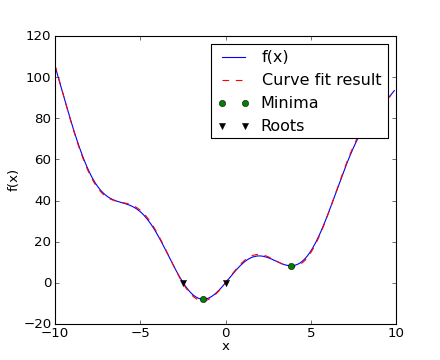Note
In Scipy >= 0.11 unified interfaces to all minimization and root finding algorithms are available: scipy.optimize.minimize(), scipy.optimize.minimize_scalar() and scipy.optimize.root(). They allow comparing various algorithms easily through the method keyword.
You can find algorithms with the same functionalities for multi-dimensional problems in scipy.optimize.
Exercise: Curve fitting of temperature data
The temperature extremes in Alaska for each month, starting in January, are given by (in degrees Celcius):
max: 17, 19, 21, 28, 33, 38, 37, 37, 31, 23, 19, 18 min: -62, -59, -56, -46, -32, -18, -9, -13, -25, -46, -52, -58
- Plot these temperature extremes.
- Define a function that can describe min and max temperatures. Hint: this function has to have a period of 1 year. Hint: include a time offset.
- Fit this function to the data with scipy.optimize.curve_fit().
- Plot the result. Is the fit reasonable? If not, why?
- Is the time offset for min and max temperatures the same within the fit accuracy?
Exercise: 2-D minimization
[source code, hires.png, pdf]
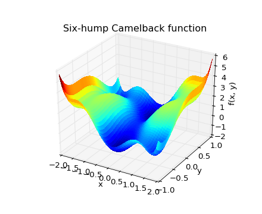The six-hump camelback function
\[f(x, y) = (4 - 2.1x^2 + \frac{x^4}{3})x^2 + xy + (4y^2 - 4)y^2\]has multiple global and local minima. Find the global minima of this function.
Hints:
- Variables can be restricted to -2 < x < 2 and -1 < y < 1.
- Use numpy.meshgrid() and pylab.imshow() to find visually the regions.
- Use scipy.optimize.fmin_bfgs() or another multi-dimensional minimizer.
How many global minima are there, and what is the function value at those points? What happens for an initial guess of (x, y) = (0, 0)?
See the summary exercise on Non linear least squares curve fitting: application to point extraction in topographical lidar data for another, more advanced example.
The module scipy.stats contains statistical tools and probabilistic descriptions of random processes. Random number generators for various random process can be found in numpy.random.
Given observations of a random process, their histogram is an estimator of the random process’s PDF (probability density function):
>>> a = np.random.normal(size=1000)
>>> bins = np.arange(-4, 5)
>>> bins
array([-4, -3, -2, -1, 0, 1, 2, 3, 4])
>>> histogram = np.histogram(a, bins=bins, normed=True)[0]
>>> bins = 0.5*(bins[1:] + bins[:-1])
>>> bins
array([-3.5, -2.5, -1.5, -0.5, 0.5, 1.5, 2.5, 3.5])
>>> from scipy import stats
>>> b = stats.norm.pdf(bins) # norm is a distribution
In [1]: pl.plot(bins, histogram)
In [2]: pl.plot(bins, b)
[source code, hires.png, pdf]
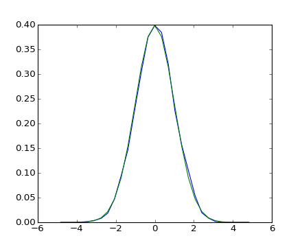If we know that the random process belongs to a given family of random processes, such as normal processes, we can do a maximum-likelihood fit of the observations to estimate the parameters of the underlying distribution. Here we fit a normal process to the observed data:
>>> loc, std = stats.norm.fit(a)
>>> loc
-0.045256707490...
>>> std
0.9870331586690...
Exercise: Probability distributions
Generate 1000 random variates from a gamma distribution with a shape parameter of 1, then plot a histogram from those samples. Can you plot the pdf on top (it should match)?
Extra: the distributions have a number of useful methods. Explore them by reading the docstring or by using IPython tab completion. Can you find the shape parameter of 1 back by using the fit method on your random variates?
The median is the value with half of the observations below, and half above:
>>> np.median(a)
-0.058028034...
It is also called the percentile 50, because 50% of the observation are below it:
>>> stats.scoreatpercentile(a, 50)
-0.0580280347...
Similarly, we can calculate the percentile 90:
>>> stats.scoreatpercentile(a, 90)
1.231593551...
The percentile is an estimator of the CDF: cumulative distribution function.
A statistical test is a decision indicator. For instance, if we have two sets of observations, that we assume are generated from Gaussian processes, we can use a T-test to decide whether the two sets of observations are significantly different:
>>> a = np.random.normal(0, 1, size=100)
>>> b = np.random.normal(1, 1, size=10)
>>> stats.ttest_ind(a, b)
(-3.75832707..., 0.00027786...)
The resulting output is composed of:
- The T statistic value: it is a number the sign of which is proportional to the difference between the two random processes and the magnitude is related to the significance of this difference.
- the p value: the probability of both processes being identical. If it is close to 1, the two process are almost certainly identical. The closer it is to zero, the more likely it is that the processes have different means.
The scipy.interpolate is useful for fitting a function from experimental data and thus evaluating points where no measure exists. The module is based on the FITPACK Fortran subroutines from the netlib project.
By imagining experimental data close to a sine function:
>>> measured_time = np.linspace(0, 1, 10)
>>> noise = (np.random.random(10)*2 - 1) * 1e-1
>>> measures = np.sin(2 * np.pi * measured_time) + noise
The scipy.interpolate.interp1d class can build a linear interpolation function:
>>> from scipy.interpolate import interp1d
>>> linear_interp = interp1d(measured_time, measures)
Then the scipy.interpolate.linear_interp instance needs to be evaluated at the time of interest:
>>> computed_time = np.linspace(0, 1, 50)
>>> linear_results = linear_interp(computed_time)
A cubic interpolation can also be selected by providing the kind optional keyword argument:
>>> cubic_interp = interp1d(measured_time, measures, kind='cubic')
>>> cubic_results = cubic_interp(computed_time)
The results are now gathered on the following Matplotlib figure:
[source code, hires.png, pdf]
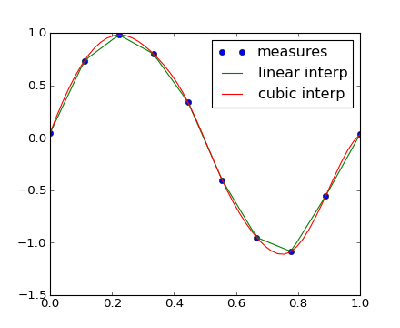scipy.interpolate.interp2d is similar to scipy.interpolate.interp1d, but for 2-D arrays. Note that for the interp family, the computed time must stay within the measured time range. See the summary exercise on Maximum wind speed prediction at the Sprogø station for a more advance spline interpolation example.
The most generic integration routine is scipy.integrate.quad():
>>> from scipy.integrate import quad
>>> res, err = quad(np.sin, 0, np.pi/2)
>>> np.allclose(res, 1)
True
>>> np.allclose(err, 1 - res)
True
Others integration schemes are available with fixed_quad, quadrature, romberg.
scipy.integrate also features routines for integrating Ordinary Differential Equations (ODE). In particular, scipy.integrate.odeint() is a general-purpose integrator using LSODA (Livermore Solver for Ordinary Differential equations with Automatic method switching for stiff and non-stiff problems), see the ODEPACK Fortran library for more details.
odeint solves first-order ODE systems of the form:
dy/dt = rhs(y1, y2, .., t0,...)
As an introduction, let us solve the ODE dy/dt = -2y between t = 0..4, with the initial condition y(t=0) = 1. First the function computing the derivative of the position needs to be defined:
>>> def calc_derivative(ypos, time, counter_arr):
... counter_arr += 1
... return -2 * ypos
...
An extra argument counter_arr has been added to illustrate that the function may be called several times for a single time step, until solver convergence. The counter array is defined as:
>>> counter = np.zeros((1,), dtype=np.uint16)
The trajectory will now be computed:
>>> from scipy.integrate import odeint
>>> time_vec = np.linspace(0, 4, 40)
>>> yvec, info = odeint(calc_derivative, 1, time_vec,
... args=(counter,), full_output=True)
Thus the derivative function has been called more than 40 times (which was the number of time steps):
>>> counter
array([129], dtype=uint16)
and the cumulative number of iterations for each of the 10 first time steps can be obtained by:
>>> info['nfe'][:10]
array([31, 35, 43, 49, 53, 57, 59, 63, 65, 69], dtype=int32)
Note that the solver requires more iterations for the first time step. The solution yvec for the trajectory can now be plotted:
[source code, hires.png, pdf]
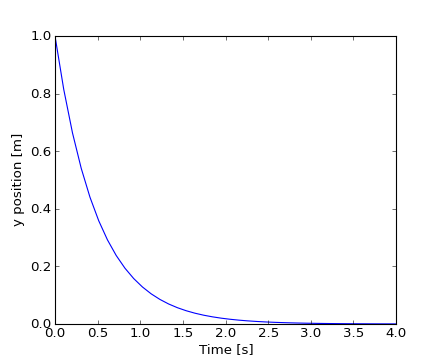
Another example with scipy.integrate.odeint() will be a damped spring-mass oscillator (2nd order oscillator). The position of a mass attached to a spring obeys the 2nd order ODE y'' + 2 eps wo y' + wo^2 y = 0 with wo^2 = k/m with k the spring constant, m the mass and eps=c/(2 m wo) with c the damping coefficient. For this example, we choose the parameters as:
>>> mass = 0.5 # kg
>>> kspring = 4 # N/m
>>> cviscous = 0.4 # N s/m
so the system will be underdamped, because:
>>> eps = cviscous / (2 * mass * np.sqrt(kspring/mass))
>>> eps < 1
True
For the scipy.integrate.odeint() solver the 2nd order equation needs to be transformed in a system of two first-order equations for the vector Y=(y, y'). It will be convenient to define nu = 2 eps * wo = c / m and om = wo^2 = k/m:
>>> nu_coef = cviscous / mass
>>> om_coef = kspring / mass
Thus the function will calculate the velocity and acceleration by:
>>> def calc_deri(yvec, time, nuc, omc):
... return (yvec[1], -nuc * yvec[1] - omc * yvec[0])
...
>>> time_vec = np.linspace(0, 10, 100)
>>> yarr = odeint(calc_deri, (1, 0), time_vec, args=(nu_coef, om_coef))
The final position and velocity are shown on the following Matplotlib figure:
[source code, hires.png, pdf]
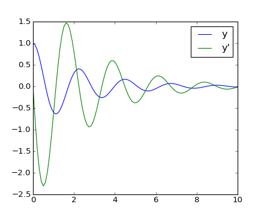There is no Partial Differential Equations (PDE) solver in Scipy. Some Python packages for solving PDE’s are available, such as fipy or SfePy.
>>> from scipy import signal
scipy.signal.detrend(): remove linear trend from signal:
t = np.linspace(0, 5, 100)
x = t + np.random.normal(size=100)
pl.plot(t, x, linewidth=3)
pl.plot(t, signal.detrend(x), linewidth=3)
[source code, hires.png, pdf]
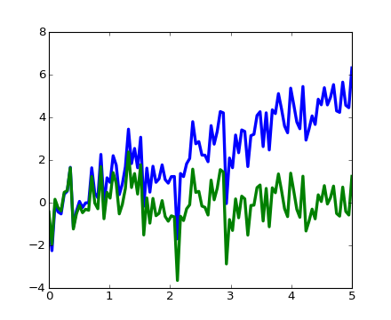scipy.signal.resample(): resample a signal to n points using FFT.
t = np.linspace(0, 5, 100)
x = np.sin(t)
pl.plot(t, x, linewidth=3)
pl.plot(t[::2], signal.resample(x, 50), 'ko')
[source code, hires.png, pdf]
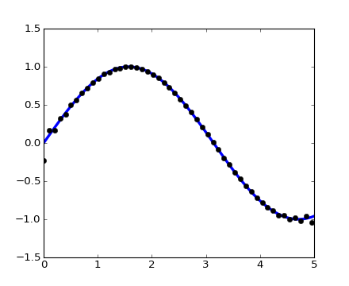scipy.signal has many window functions: scipy.signal.hamming(), scipy.signal.bartlett(), scipy.signal.blackman()...
scipy.signal has filtering (median filter scipy.signal.medfilt(), Wiener scipy.signal.wiener()), but we will discuss this in the image section.
The submodule dedicated to image processing in scipy is scipy.ndimage.
>>> from scipy import ndimage
Image processing routines may be sorted according to the category of processing they perform.
Changing orientation, resolution, ..
>>> from scipy import misc
>>> lena = misc.lena()
>>> shifted_lena = ndimage.shift(lena, (50, 50))
>>> shifted_lena2 = ndimage.shift(lena, (50, 50), mode='nearest')
>>> rotated_lena = ndimage.rotate(lena, 30)
>>> cropped_lena = lena[50:-50, 50:-50]
>>> zoomed_lena = ndimage.zoom(lena, 2)
>>> zoomed_lena.shape
(1024, 1024)

In [35]: subplot(151)
Out[35]: <matplotlib.axes.AxesSubplot object at 0x925f46c>
In [36]: pl.imshow(shifted_lena, cmap=cm.gray)
Out[36]: <matplotlib.image.AxesImage object at 0x9593f6c>
In [37]: axis('off')
Out[37]: (-0.5, 511.5, 511.5, -0.5)
In [39]: # etc.
>>> from scipy import misc
>>> lena = misc.lena()
>>> import numpy as np
>>> noisy_lena = np.copy(lena).astype(np.float)
>>> noisy_lena += lena.std()*0.5*np.random.standard_normal(lena.shape)
>>> blurred_lena = ndimage.gaussian_filter(noisy_lena, sigma=3)
>>> median_lena = ndimage.median_filter(blurred_lena, size=5)
>>> from scipy import signal
>>> wiener_lena = signal.wiener(blurred_lena, (5,5))

Many other filters in scipy.ndimage.filters and scipy.signal can be applied to images.
Exercise
Compare histograms for the different filtered images.
Mathematical morphology is a mathematical theory that stems from set theory. It characterizes and transforms geometrical structures. Binary (black and white) images, in particular, can be transformed using this theory: the sets to be transformed are the sets of neighboring non-zero-valued pixels. The theory was also extended to gray-valued images.

Elementary mathematical-morphology operations use a structuring element in order to modify other geometrical structures.
Let us first generate a structuring element
>>> el = ndimage.generate_binary_structure(2, 1)
>>> el
array([[False, True, False],
[True, True, True],
[False, True, False]], dtype=bool)
>>> el.astype(np.int)
array([[0, 1, 0],
[1, 1, 1],
[0, 1, 0]])
Erosion
>>> a = np.zeros((7,7), dtype=np.int)
>>> a[1:6, 2:5] = 1
>>> a
array([[0, 0, 0, 0, 0, 0, 0],
[0, 0, 1, 1, 1, 0, 0],
[0, 0, 1, 1, 1, 0, 0],
[0, 0, 1, 1, 1, 0, 0],
[0, 0, 1, 1, 1, 0, 0],
[0, 0, 1, 1, 1, 0, 0],
[0, 0, 0, 0, 0, 0, 0]])
>>> ndimage.binary_erosion(a).astype(a.dtype)
array([[0, 0, 0, 0, 0, 0, 0],
[0, 0, 0, 0, 0, 0, 0],
[0, 0, 0, 1, 0, 0, 0],
[0, 0, 0, 1, 0, 0, 0],
[0, 0, 0, 1, 0, 0, 0],
[0, 0, 0, 0, 0, 0, 0],
[0, 0, 0, 0, 0, 0, 0]])
>>> #Erosion removes objects smaller than the structure
>>> ndimage.binary_erosion(a, structure=np.ones((5,5))).astype(a.dtype)
array([[0, 0, 0, 0, 0, 0, 0],
[0, 0, 0, 0, 0, 0, 0],
[0, 0, 0, 0, 0, 0, 0],
[0, 0, 0, 0, 0, 0, 0],
[0, 0, 0, 0, 0, 0, 0],
[0, 0, 0, 0, 0, 0, 0],
[0, 0, 0, 0, 0, 0, 0]])
Dilation
>>> a = np.zeros((5, 5))
>>> a[2, 2] = 1
>>> a
array([[ 0., 0., 0., 0., 0.],
[ 0., 0., 0., 0., 0.],
[ 0., 0., 1., 0., 0.],
[ 0., 0., 0., 0., 0.],
[ 0., 0., 0., 0., 0.]])
>>> ndimage.binary_dilation(a).astype(a.dtype)
array([[ 0., 0., 0., 0., 0.],
[ 0., 0., 1., 0., 0.],
[ 0., 1., 1., 1., 0.],
[ 0., 0., 1., 0., 0.],
[ 0., 0., 0., 0., 0.]])
Opening
>>> a = np.zeros((5,5), dtype=np.int)
>>> a[1:4, 1:4] = 1; a[4, 4] = 1
>>> a
array([[0, 0, 0, 0, 0],
[0, 1, 1, 1, 0],
[0, 1, 1, 1, 0],
[0, 1, 1, 1, 0],
[0, 0, 0, 0, 1]])
>>> # Opening removes small objects
>>> ndimage.binary_opening(a, structure=np.ones((3,3))).astype(np.int)
array([[0, 0, 0, 0, 0],
[0, 1, 1, 1, 0],
[0, 1, 1, 1, 0],
[0, 1, 1, 1, 0],
[0, 0, 0, 0, 0]])
>>> # Opening can also smooth corners
>>> ndimage.binary_opening(a).astype(np.int)
array([[0, 0, 0, 0, 0],
[0, 0, 1, 0, 0],
[0, 1, 1, 1, 0],
[0, 0, 1, 0, 0],
[0, 0, 0, 0, 0]])
Closing: ndimage.binary_closing
Exercise
Check that opening amounts to eroding, then dilating.
An opening operation removes small structures, while a closing operation fills small holes. Such operations can therefore be used to “clean” an image.
>>> a = np.zeros((50, 50))
>>> a[10:-10, 10:-10] = 1
>>> a += 0.25*np.random.standard_normal(a.shape)
>>> mask = a>=0.5
>>> opened_mask = ndimage.binary_opening(mask)
>>> closed_mask = ndimage.binary_closing(opened_mask)

Exercise
Check that the area of the reconstructed square is smaller than the area of the initial square. (The opposite would occur if the closing step was performed before the opening).
For gray-valued images, eroding (resp. dilating) amounts to replacing a pixel by the minimal (resp. maximal) value among pixels covered by the structuring element centered on the pixel of interest.
>>> a = np.zeros((7,7), dtype=np.int)
>>> a[1:6, 1:6] = 3
>>> a[4,4] = 2; a[2,3] = 1
>>> a
array([[0, 0, 0, 0, 0, 0, 0],
[0, 3, 3, 3, 3, 3, 0],
[0, 3, 3, 1, 3, 3, 0],
[0, 3, 3, 3, 3, 3, 0],
[0, 3, 3, 3, 2, 3, 0],
[0, 3, 3, 3, 3, 3, 0],
[0, 0, 0, 0, 0, 0, 0]])
>>> ndimage.grey_erosion(a, size=(3,3))
array([[0, 0, 0, 0, 0, 0, 0],
[0, 0, 0, 0, 0, 0, 0],
[0, 0, 1, 1, 1, 0, 0],
[0, 0, 1, 1, 1, 0, 0],
[0, 0, 3, 2, 2, 0, 0],
[0, 0, 0, 0, 0, 0, 0],
[0, 0, 0, 0, 0, 0, 0]])
Let us first generate a nice synthetic binary image.
>>> x, y = np.indices((100, 100))
>>> sig = np.sin(2*np.pi*x/50.)*np.sin(2*np.pi*y/50.)*(1+x*y/50.**2)**2
>>> mask = sig > 1
Now we look for various information about the objects in the image:
>>> labels, nb = ndimage.label(mask)
>>> nb
8
>>> areas = ndimage.sum(mask, labels, xrange(1, labels.max()+1))
>>> areas
array([ 190., 45., 424., 278., 459., 190., 549., 424.])
>>> maxima = ndimage.maximum(sig, labels, xrange(1, labels.max()+1))
>>> maxima
array([ 1.80238238, 1.13527605, 5.51954079, 2.49611818,
6.71673619, 1.80238238, 16.76547217, 5.51954079])
>>> ndimage.find_objects(labels==4)
[(slice(30L, 48L, None), slice(30L, 48L, None))]
>>> sl = ndimage.find_objects(labels==4)
>>> import pylab as pl
>>> pl.imshow(sig[sl[0]])
<matplotlib.image.AxesImage object at ...>

See the summary exercise on Image processing application: counting bubbles and unmolten grains for a more advanced example.
The summary exercises use mainly Numpy, Scipy and Matplotlib. They provide some real-life examples of scientific computing with Python. Now that the basics of working with Numpy and Scipy have been introduced, the interested user is invited to try these exercises.
Exercises:
Proposed solutions:

{kind=link}
{kind=link}
{kind=link}
{kind=link}
{kind=link}
{kind=link}
{kind=link}
{kind=link}
{kind=link}
{kind=link}
{kind=link}
{kind=link}
{kind=link}
{kind=link}
{kind=link}
{kind=link}
{kind=link}
{kind=link}
{kind=link}
{kind=link}
{kind=link}